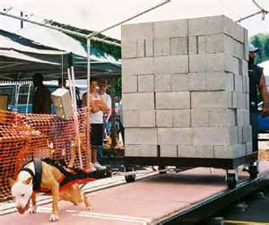
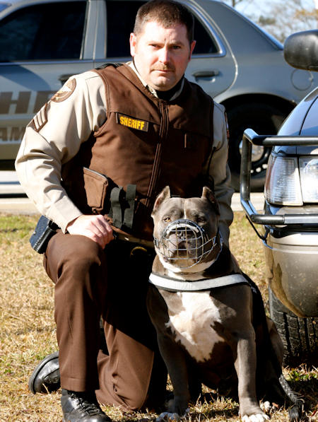

Pit Bulls are working dogs. Their strength, determination, loyalty, and energy make them great at an assortment of activities from sports to helping people in need. There are many rescue groups that take Pits from shelters and train them to become service and companion dogs for veterans with physical and mental disabilities. Pits have helped hospital patients and nursing home residents as well. Therapy dogs have been shown to ease lonliness, lower blood pressure, and cause happiness. Police Departments are starting to use more Pit Bulls for their K9 units and search & rescue teams. Popular sports with Pits are weight pulling, wall climbing, dock jumping and agility courses. All in all Pits are well-rounded, amazing dogs that are perfect companions for whatever your interests or needs.
- Some Sports and Services
- Agility Competitions
- Dock Jumping
- Guarding Services
- Guide Services
- Medical Alert
- Obedience Trials
- Personal Protection
- Police & Military K9s
- Search & Rescue
- Show Competitions
- Tracking
- Wall Climbing
- Weight Pulling

